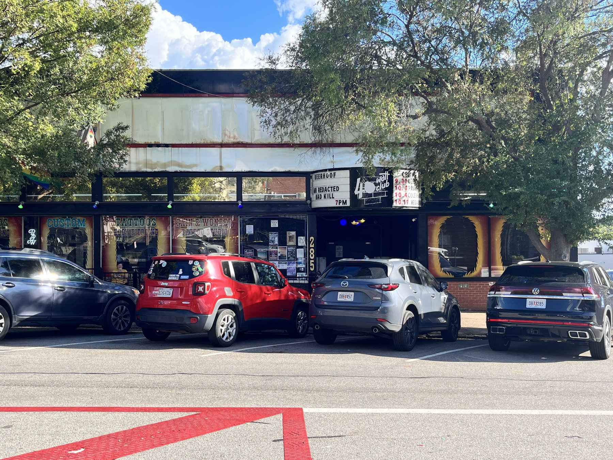
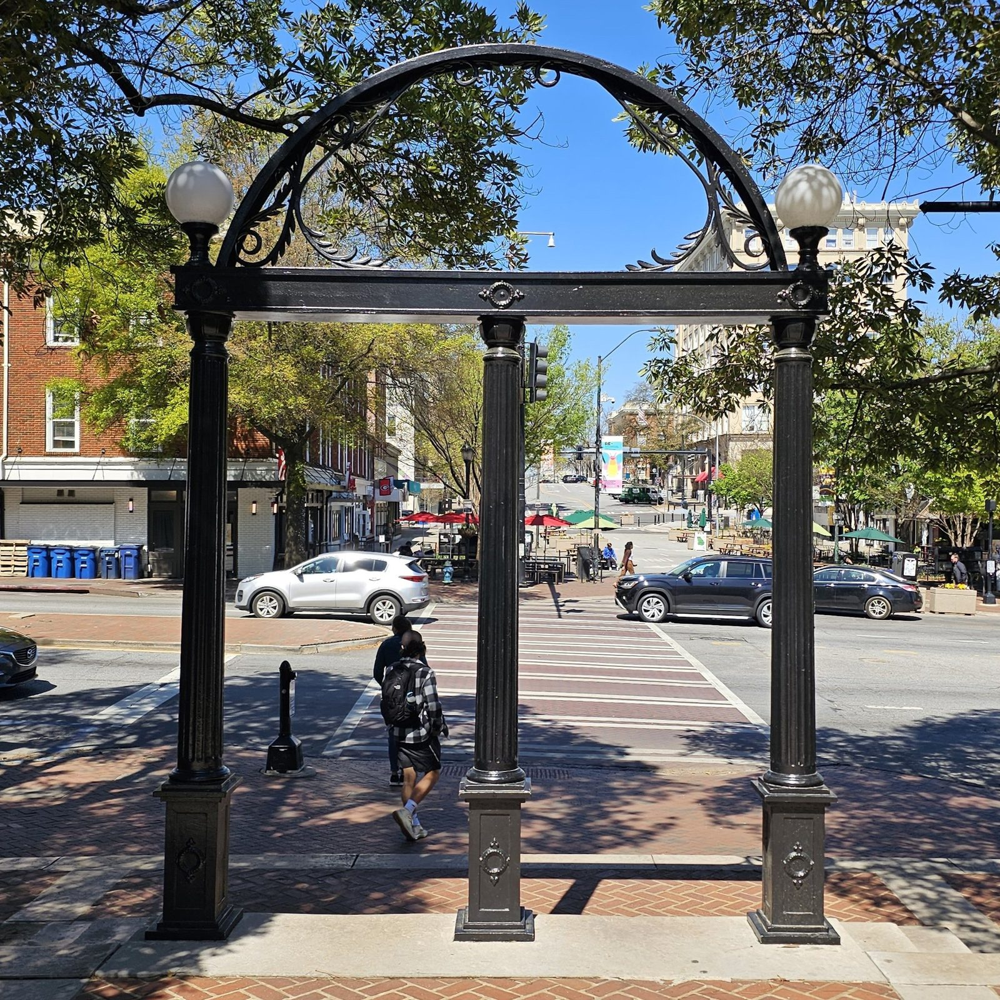

Tuesday · Music
(c. 1983–1994): independent labels, college radio, and guitars that stayed off the majors
After ’s first stretch, a decade of small labels, student radio, and guitar groups built a parallel circuit in , Athens, New York, London, , and . The press called it indie and . The majors arrived at the end of the decade and renamed a lot of it .
{kind=link}
“” and “” are press and radio labels, not a single sound and not a membership card. This lesson covers roughly 1983–1994: independent distribution and student radio in Britain and the United States, with ’s Flying Nun and ’s Go-Betweens as contemporaneous scenes, not as a required pairing. It is not a grunge lesson (Sub Pop and are named only as the commercial hinge that renamed much of this circuit “”). It is not , not the 2000s indie revival, and not a full catalogue — is named as one Creation peak inside the window. Band photographs from the 1980s are usually still in copyright, so the pictures here are buildings and streets — , Rough Trade on , the , the Arch, Railway Station, a street — captioned as later or place photographs. Where a free picture could not be found, the lesson does without. No AI people.
Select any words, or tap a dotted term.
- 1981–82 Labels before the word stuck founds in , New Zealand, in 1981; ’s “” is an early single. In , , , , and — students — form and issue on I.R.S. in 1982. In , and begin writing as . , spun from ’s shop (opened 1976), is already distributing independent 45s through the .
- 1983–84 The hinge years ’ “” appears on Rough Trade in May 1983; “” follows in October; the debut album arrives in February 1984. ’s (I.R.S., 12 April 1983) becomes a college-radio landmark and later tops critics’ lists over in some year-end polls. College stations in the United States treat arpeggiated guitars and opaque vocals as a programming category — “” — rather than a major-label playlist.
- 1985–87 Catalogues and cassettes issue (1985) and (June 1986); photograph for the inner sleeve is taken in December 1985. ’s cassette (1986) freezes a British indie guitar snapshot and turns a mail-order tape into a genre shorthand. move from New York’s downtown circuit toward SST. The form in ; appears on in 1987. finish their I.R.S. run with (1987) and prepare a Warner Bros. deal.
- 1988–91 Peaks and major-label doors ’s (SST, October 1988). ’ (, 1988) and (1989). release (Warner Bros., 1988). ’s (Creation, 4 November 1991) costs ’s label a fortune and defines a London–Thames Valley peak. Creation, , Matador, , and keep separate catalogues while majors shop the college charts.
- 1992–94 Slanted, then renamed ’s (Matador, April 1992) becomes a US indie-rock reference LP. ’s (, 1991) and the “” chart rewrite the commercial story; many of the same listeners and stations are involved, but the word on the packaging changes. By the mid-1990s and major-label absorb press attention. This lesson stops before that absorption becomes the main subject.
Before
After post-punk’s first stretch, the independent 45 was still the unit
The capsule ends around 1984: Joy Division gone, New Order moving toward dance records, PiL changing shape, Factory building a club. What did not end was the , the shop that stocked imports, or the student radio station that refused the commercial rock playlist. In Britain those shops and labels already had a network — ’s Rough Trade shop (Kensington Park Road from 1976, then from 1982) and (from 1978), plus the that distributed other independents’ 45s to shops that would take them. In the United States the parallel circuit was college radio: non-commercial campus stations whose music directors built playlists from promo copies, zines, and word of mouth rather than from ’s Album Rock chart.
The word “indie” first attached to the business fact — independent manufacture and distribution — and only later hardened into a guitar sound. Factory, , Fiction, and Rough Trade had already proved that a label outside the majors could chart. What changed in the mid-1980s was the volume of guitar groups that treated that circuit as home rather than as a stepping stone, and the American student stations that made “” a measurable audience. Rolling Stone, , and the British weeklies began to treat those charts as news. The majors noticed later.
Two 1983 records mark the hinge without being the same music. In , put “” out on Rough Trade in May and “” in October; ’s trebly, arpeggiated guitar and ’s literary, celibate, Mancunian voice became a template for British indie identity. In , ’s appeared on I.R.S. on 12 April 1983: ’s , ’s melodic bass, ’s drums, and ’s deliberately unclear diction. College stations made a campus fact. Critics’ year-end lists sometimes ranked it above Michael Jackson’s . That comparison is a press story, not a sales story. It tells you where the parallel circuit’s prestige sat.
The era
Manchester, Athens, New York, London: catalogues, not a committee
Do not start with one capital. , Athens, New York’s downtown, and London’s independent labels made records in overlapping years. They shared distributors, , charts, and a few producers. They did not share a sound. The useful way through is catalogues and rooms.
In , — , , , — stayed on Rough Trade for their studio albums. (February 1984), (February 1985), (June 1986), and (September 1987) are the LP run. Marr’s guitar borrowed from 1960s and from ’s funk economy without making a funk record. ’s lyrics named kitchens, bus stops, , and the North without pretending to be a stadium anthem. “” (1985) used a vibrato guitar figure that became as identifiable as any riff of the decade. In December 1985 photographed the four of them outside on Coronation Street in Ordsall; the picture went into ’s packaging. The club was a real boys’ club founded in 1903. The photograph made the brick famous. The group split in 1987 after lawsuits and exhaustion. Rough Trade’s later financial crisis is another story; the mid-1980s catalogue is this lesson’s British centre.
.jpg){kind=link}

{kind=link}
In , built a career from the circuit and from , the label associated with and . (1982), (1983), (1984), (1985), (1986), and (1987) are the I.R.S. spine. Buck’s Rickenbacker and Stipe’s murky early vocals gave college programmers a sound they could own. By — “The One I Love,” “It’s the End of the World as We Know It (And I Feel Fine)” — the group was already crossing into commercial radio. In 1988 they signed to Warner Bros. and released . The deal is the hinge many histories name: a college-rock band taking major money without dropping the arpeggios overnight. (1992) sits at the edge of this lesson. The earlier are the indie fact.

{kind=link}

{kind=link}
In New York, — , , , with on drums from the mid-1980s — treated alternate guitar tunings and feedback as composition, not accident. (SST, 1988) is the double album to slow down for: “,” “Silver Rocket,” “Total Trash.” SST, ’s label out of the hardcore world, pressed a wide American underground. signed to ’s for (1990). The move mirrors ’s Warner step: the indie catalogue first, the major second. Across the same years ’s — (), , , — recorded for , ’s London label. (1987), (1988, ), and (1989, ) fixed quiet-loud dynamics and surreal Catholic-sci-fi lyrics as an export. later named the as a model; that influence belongs to the next commercial chapter. The records belong here.
In London and the Thames Valley, () and the cluster pushed guitars into noise and blur. ’s (4 November 1991), largely the work of with , , and , took years and nearly broke Creation’s finances. “” and “Soon” are the tracks that show the method: guitars treated as massed texture, vocals recessed. , , , and shared bills and press tags; is the expensive peak inside this lesson’s window. () in Massachusetts, and in the orbit, and on ’s in Olympia filled other shelves. Name them so the map is not only four cities. Deepen , , , , and because those catalogues still structure how people teach the decade.
How it sounded
Jangle, noise, and the independent 12-inch
If you need a short listening grammar: British indie of / corridor favoured bright, trebly guitars, melodic bass, and vocals that refused American stadium grain. American favoured the same () or turned up dissonance and volume (, ). recessed the voice and stacked guitars until chords became noise bands. None of these rules were clean. wrote literate pop from via London. ’s Flying Nun singles were short and sharp. ’s early sounded like rehearsals left on the tape, on purpose.
The unit of commerce was still the independent single and the college chart, not the stadium. New Music Report tabulated what campus stations played. ’s BBC Radio 1 show kept British independents audible nationally. Fanzines and later glossy monthlies (, , ’s indie pages) argued over purity when a group signed up. That argument is part of the era’s sociology: “indie” meant a contract and a distributor before it meant a strumming pattern. When and took major deals, the argument intensified. The records did not become worthless. The word got harder to use.
Elsewhere
Dunedin and Brisbane were not waiting for a London memo
began in in 1981 under . The — , , , , and others — used cheap studios, short songs, and a South Island geography far from EMI’s London offices. “” and the early Clean EPs travelled through import shops and Peel playlists. The point is not that New Zealand copied . The point is that independent pressing and a local scene could build a catalogue at the same time Rough Trade and I.R.S. were building theirs. Railway Station in the photograph below is the city’s landmark, not a studio. It stands for the place the records came from.
{kind=link}
In , — and at the core — wrote songs that critics later filed beside literate indie pop without the group ever being a satellite. (1983) holds “,” McLennan’s memory of Queensland childhood set to a clean guitar figure. They recorded and released through British and Australian arrangements across the 1980s. Contemporaneous, not derivative: same independent-era problem (how to get a record pressed and heard), different weather and class accents.
Tokyo’s district later became a byword for small live houses and record shops; Japanese indie and city-pop adjacent scenes in the 1980s–90s ran on their own label and university circuits. The street photograph is a later view of that geography, not a claim that invented . It is here as one more contemporaneous urban map where independent gigs and shops clustered — useful, not mandatory.
{kind=link}
After
When “alternative” bought the chart, indie kept the word and lost the monopoly
’s (, September 1991) and the early-1990s boom did not invent the college audience. They sold it at scale. ’s Modern Rock charts, , and major-label A&R departments harvested the same stations and clubs this lesson describes. ’s (Matador, 1992) still sounded handmade; major radio increasingly did not need handmade. in mid-1990s Britain and the packaged “” aisle in American chains rewrote the shop labels. Independent labels continued — Matador, Merge, , later and others — but the press story moved.
What remains from 1983–1994 is infrastructure knowledge: a shop, a distributor, a campus transmitter, and a weekly paper could still make a career before playlist software and streaming aggregates. ’ Rough Trade years, ’s I.R.S. years, on SST, the on , on Creation, Flying Nun’s catalogue, and ’ –London axis are the concrete objects. The next music capsules can take grunge, , or electronic/hyperpop as separate eras. This one stops when the parallel circuit is absorbed into a mass-market name.
A question
A question to keep asking
If “indie” began as a fact about who pressed and distributed the record, what is left of the word once the same guitars sit on a major-label video budget?
Fun fact
C86 began as a free NME cassette, then became a genre name people argued about
In May 1986 the British weekly mailed a cassette, , to readers who collected coupons and paid postage. Twenty-two tracks from small British labels — , , , and others — sat on one tape. The project was a snapshot of indie distribution that year, not a manifesto. Within months “” was being used as shorthand for jangly, melodic guitar groups, and several of the bands on the tape rejected the box. The useful fact is logistical: a music paper, a mail-order cassette, and independent labels could still define a season of listening before “” became a format.